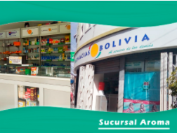

→ Sucursales Regional Cochabamba
- 
- Sucursal América (Ciudad de Cochabamba)
- Av. América Nº 529 esquina Pantaleón Dalence.
- Horario de Atención
- Lunes a Sábado: de 07:30 a 23:00 Horas. Teléfono de referencia: 466-5736
-
- Sucursal Calatayud (Ciudad de Cochabamba)
- Calle Uruguay Nº 525, entre c/San Martín y c/Lanza.
- Horario de Atención
- Lunes a Sábado: de 07:30 a 23:00 Horas. Teléfono de referencia: 451-2991
- Domingos y Feriados: de 07:00 a 19:00 Horas.
-
- Sucursal España (Ciudad de Cochabamba)
- Av. Heroínas Nº 299, entre España y Baptista.
- Horario de Atención
- Lunes a Sábado: de 07:30 a 23:00 Horas. Teléfono de referencia: 466-0276
-
- Sucursal Heroínas (Ciudad de Cochabamba)
- Av. Heroínas Nº 125, esquinas Ayacucho.
- Horario de Atención
- Lunes a Sábado: de 07:30 a 23:00 Horas. Teléfono de referencia: 450-6135
- Domingos y Feriados: de 09:00 a 22:00 Horas.
-
- Sucursal Papa Paulo (Ciudad de Cochabamba)
- Av. Papa Paulo Nº 1288, entre Aniceto Arce y calle Venezuela.
- Horario de Atención
- Lunes a Sábado: de 07:30 a 23:00 Horas. Teléfono de referencia: 455-5284
-
- Sucursal Prado (Ciudad de Cochabamba)
- Av. Ballivián nº 567 entre c/Juan de la reza y c/México.
- Horario de Atención
- Lunes a Sábado: de 07:30 a 23:00 Horas. Teléfono de referencia: 452-2128
- Domingos y Feriados: de 09:30 a 22:30 Horas.
-
- Sucursal Jordán (Ciudad de Cochabamba)
- Av. San Martín Nº 429, entre c/Jordán y c/Calama.
- Horario de Atención
- Lunes a Sábado: de 07:30 a 23:00 Horas. Teléfono de referencia: 450-2276
-
- Sucursal Uruguay (Ciudad de Cochabamba)
- Av. San Martín N° 657, entre c/Ladislao Cabrera y c/Uruguay.
- Horario de Atención
- Lunes a Sábado: de 07:30 a 23:00 Horas. Teléfono de referencia: 450-9524
-
- Sucursal Plaza (Ciudad de Cochabamba)
- Calle Esteban Arce Nº 309, entre Sucre y Jordán.
- Horario de Atención
- Lunes a Sábado: de 07:30 a 23:00 Horas. Teléfono de referencia: 450-7159
-
- Sucursal Aroma (Ciudad de Cochabamba)
- Calle 25 de Mayo Nº 8181, esquina Aroma.
- Horario de Atención
- Lunes a Sábado: de 07:30 a 23:00 Horas. Teléfono de referencia: 4799562
- Domingos y Feriados: de 08:00 a 21:00 Horas.
-
- Sucursal Quillacollo (Provincia Quillacollo - Cochabamba)
- Av. Blanco Galindo s/n, entre calle Antofagasta y General Pacheco.
- Horario de Atención
- Lunes a Sábado: de 07:30 a 23:00 Horas.
- Domingos y Feriados: de 09:00 a 21:00 Horas.
-
- Sucursal Bolívar (Provincia Quillacollo - Cochabamba)
- Calle José Ballivián Nº 52entre Blanco Galindo y c/Gral. Pando.
- Horario de Atención
- Lunes a Sábado: de 07:30 a 23:00 Horas. Teléfono de referencia: 425-7077
- Domingos y Feriados: de 07:30 a 20:30 Horas